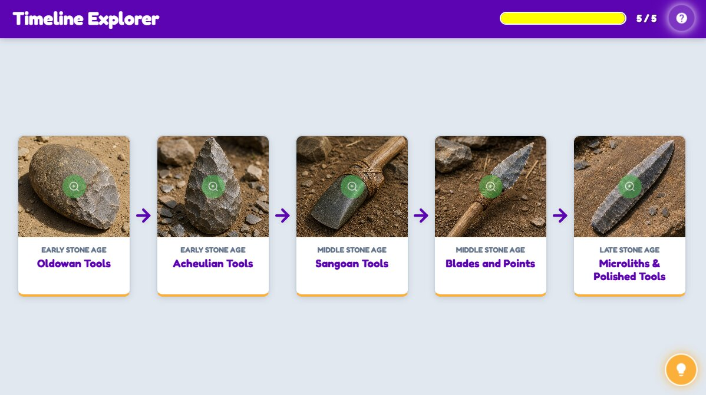

Tools Through the Ages
Timeline Explorer
0 / 5
Activity Introduction
Let us follow the story of human invention! From simple rocks to sharp blades, tools helped early humans shape the world around them. Explore the timeline to watch how tools transformed from the Early Stone Age all the way to the Late Stone Age. Each tool tells a story of survival, skill, and innovation!
Learner Instructions
- Click on the tool icons to see images, animations, and descriptions.
- Read the description and observe the details in each tool's design and purpose.
- When you close a tool's info, the timeline will advance to reveal the next tool.
- Compare how tools change from one stage to the next.
- Visit all tool hotspots to unlock the complete story of human innovation.
Here is a Hint
- Click the visible tool card on the timeline to learn about it.
- You must review the information inside the pop-up to unlock the next stage in history.
- Look for differences in size, shape, and use as you progress.
Activity Conclusion
